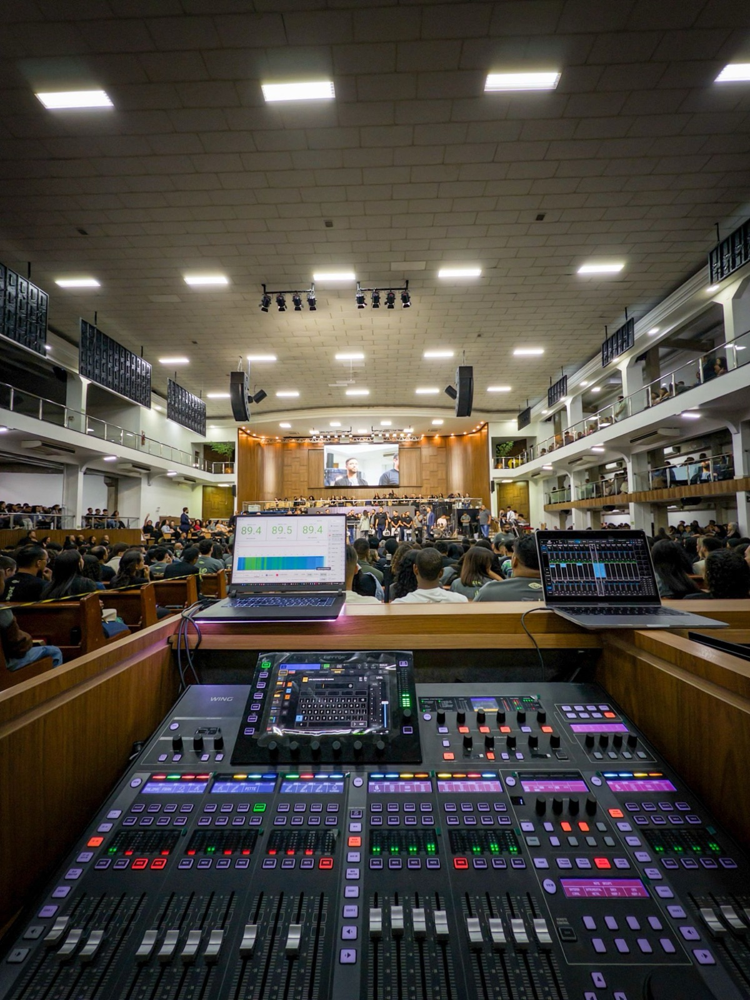
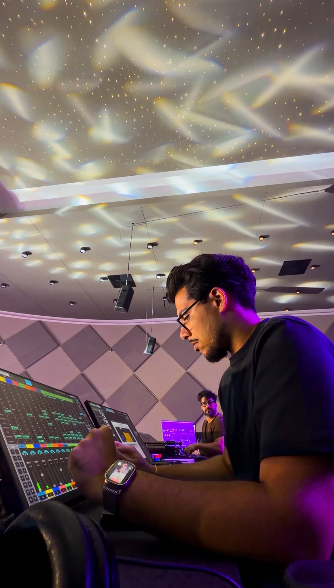
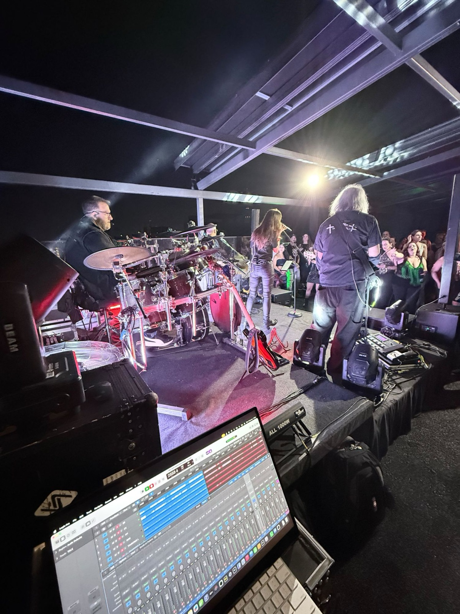
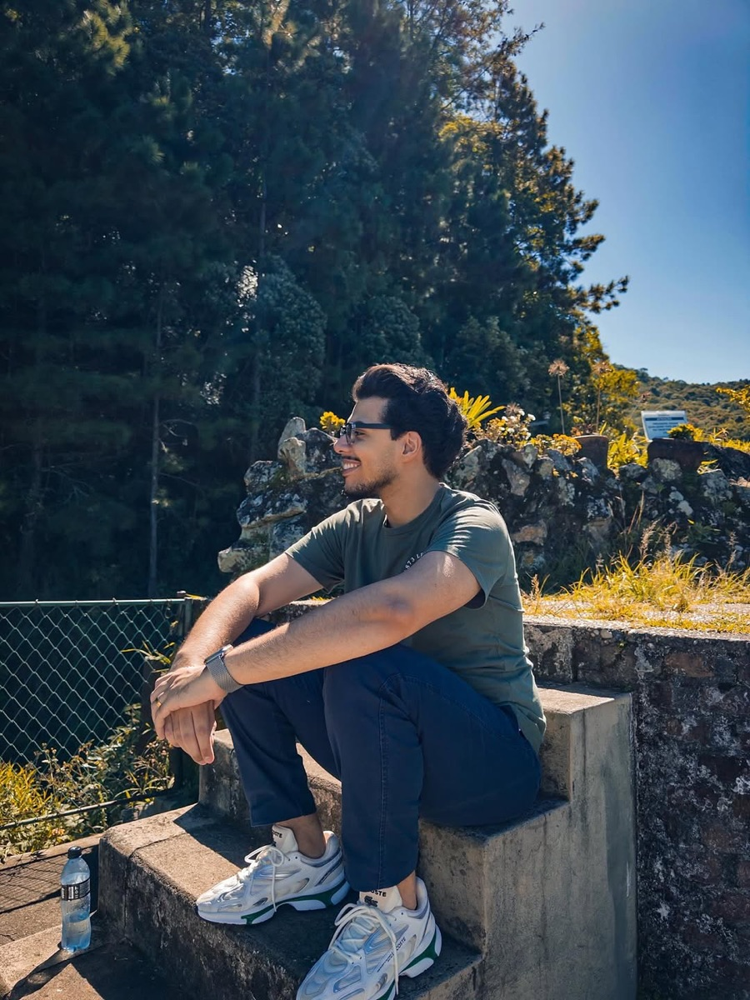

CH 01REINO
● ON AIR
-∞
Teu reino vem Um trecho do que rolou no aniversário da Cidade Imafé.
Audio Engineer | 96's
Mix ao vivo pra quem tá na nave e pra quem assiste de casa. FOH e Live Streaming na Cidade Imafé.
Quem tá no culto não pensa no som. Pensa na palavra, na música, no momento. O trabalho de quem tá na mesa é fazer tudo isso chegar inteiro, da primeira fila até a galeria, e até a tela de quem assiste de casa.
01 · A mesa
Quatro canais, quatro momentos que o Léo mixou ao vivo. Sobe o fader pra ouvir, aperta SOLO pra ficar só com um.
Teu reino vem Um trecho do que rolou no aniversário da Cidade Imafé.
Culto especial Mix de um culto na Cidade Imafé com a Juliane Nogueira.
Live mix no Sejaluz Um pouco do que rola nesse espetáculo incrível.
Vista da mesa O palco lá na frente e o Wing aberto no tablet.
02 · Fluxo de sinal
OUT 01 · PA
Front of house. A mix que a igreja inteira ouve, da primeira fila até a galeria, feita no Wing lá no meio da nave.

OUT 02 · STREAM
Quem assiste de casa também tá no culto. Mix pensada pra transmissão, pra chegar inteira no fone e na caixinha do celular.

OUT 03 · REC
Banda no palco, público na frente e o Logic gravando cada canal no canto do palco.

03 · Rack

04 · Onde já soou
05 · Talkback
Monta o pedido aqui e manda direto pro Léo no Instagram.